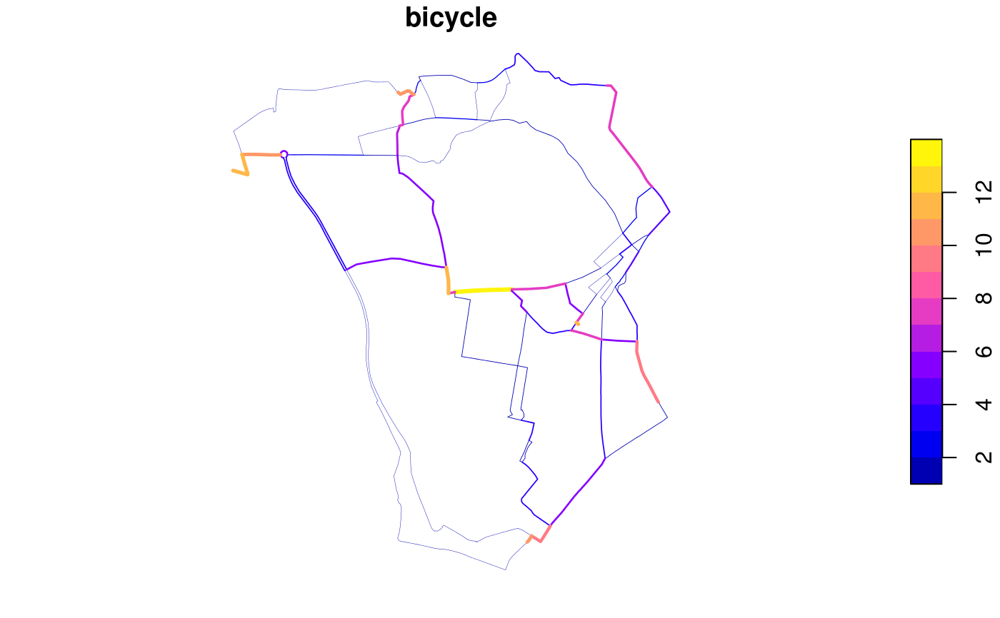

Convert series of overlapping lines into a route network (new method)
Source:R/overline.R
overline2.RdThis function is intended as a replacement for overline() and is significantly faster especially on large datasets. However, it also uses more memory.
overline2(x, attrib, ncores = 1, simplify = TRUE, regionalise = 1e+05)
Arguments
| x | An SF data.frame of LINESTRINGS |
|---|---|
| attrib | character, column names in x to be summed |
| ncores | integer, how many cores to use in parallel processing, default = 1 |
| simplify | logical, if TRUE group final segments back into lines, default = TRUE |
| regionalise | integer, during simplification regonalisation is used if the number of segments exceeds this value |
Value
An SF data.frame of LINESTRINGS
Details
The overline2 function breaks each line into many straight segments and then looks for duplicated segments. Attributes are summed for all duplicated segments, and if simplify is TRUE the segments with identical attributes are recombined into linestrings.
Regionalisation breaks the dataset into a 10 x 10 grid and then performed the simplification across each grid. This significantly reduces computation time for large datasets, but slightly increases the final file size. For smaller datasets it increases computation time slightly but reduces memory usage and so may also be useful.
A known limitation of this method is that overlapping segments of different lengths are not aggregated. This can occur when lines stop halfway down a road. Typically these errors are small, but some artefacts may remain within the resulting data.
For very large datasets nrow(x) > 1000000, memory usage can be significant. In these cases is is possible to overline subsets of the dataset, rbind the results together, and then overline again, to produce a final result.
Multicore support is only enabled for the regionalised simplification stage as it does not help with other stages.
See also
Other rnet: SpatialLinesNetwork,
calc_catchment_sum,
calc_catchment,
calc_moving_catchment,
calc_network_catchment,
find_network_nodes, gsection,
islines, lineLabels,
overline,
plot,SpatialLinesNetwork,ANY-method,
plot,sfNetwork,ANY-method,
sln2points,
sum_network_links,
sum_network_routes
Examples
sl = routes_fast_sf[routes_fast_sf$length > 0, ] sl$bicycle = 1 system.time({rnet1 = overline2(sl, "bicycle")})#>#>#>#>#>#> user system elapsed #> 0.108 0.000 0.109#>#>#>#>#>#> user system elapsed #> 0.164 0.000 0.163#> [1] TRUEregion = "isle-of-wight" u = paste0( "https://github.com/npct/pct-outputs-regional-notR/raw/master/commute/msoa/", region, "/rf.geojson" ) sl = sf::read_sf(u) system.time({rnet1 = overline2(sl, "bicycle")})#>#>#>#>#>#> user system elapsed #> 0.816 0.008 0.824#>#>#>#>#>#> user system elapsed #> 0.788 0.004 0.790#> [1] TRUE